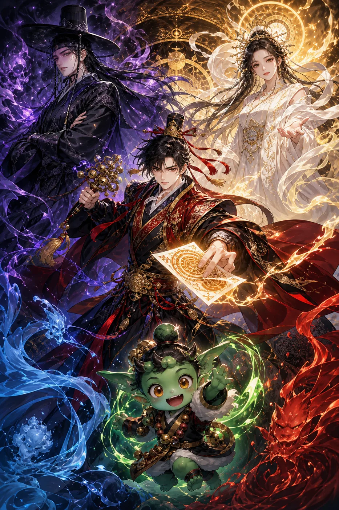
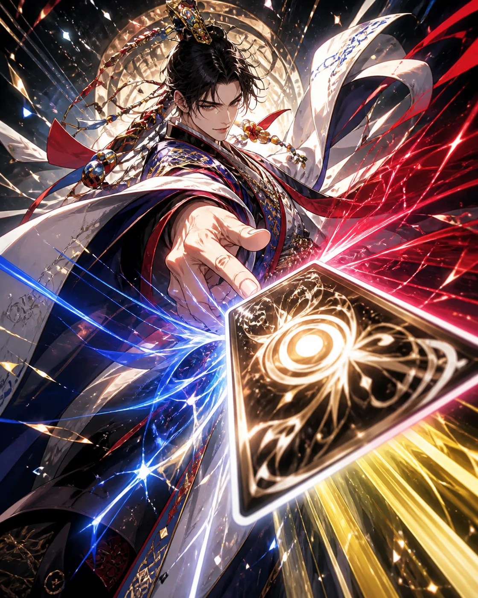
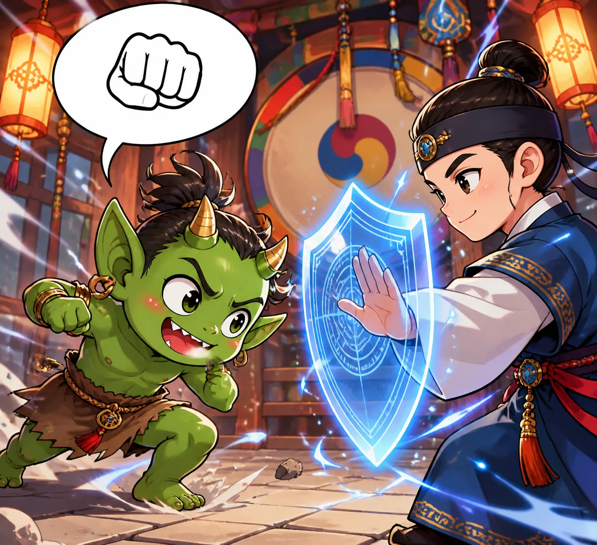
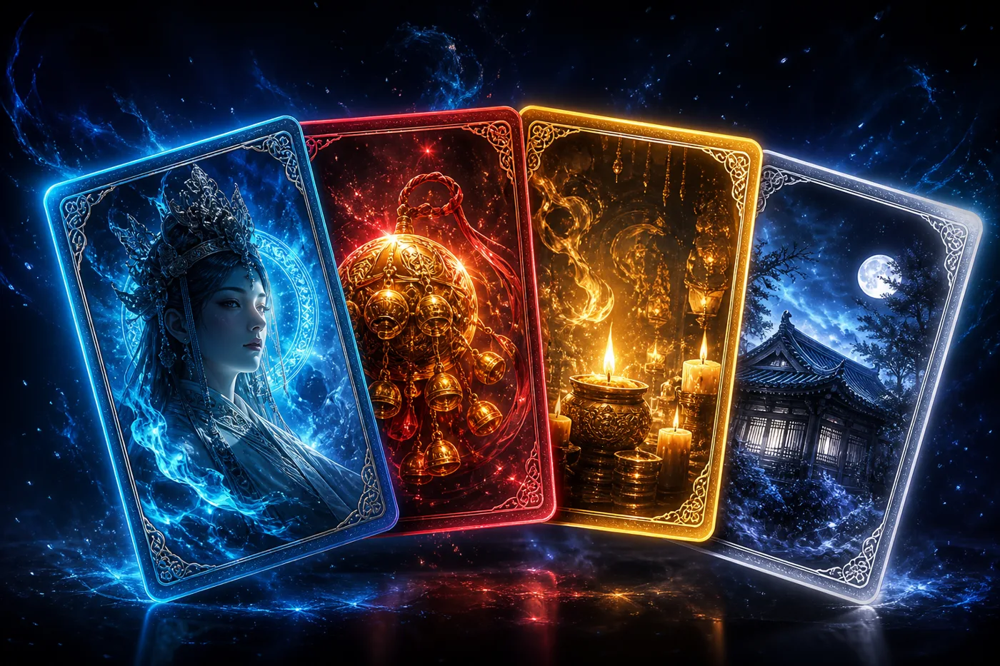
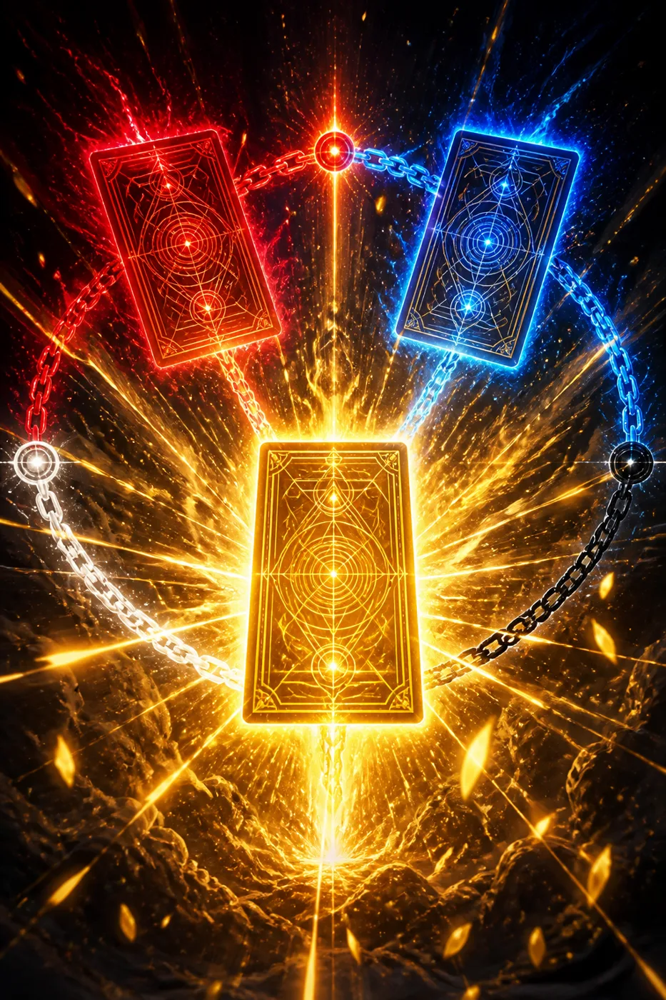
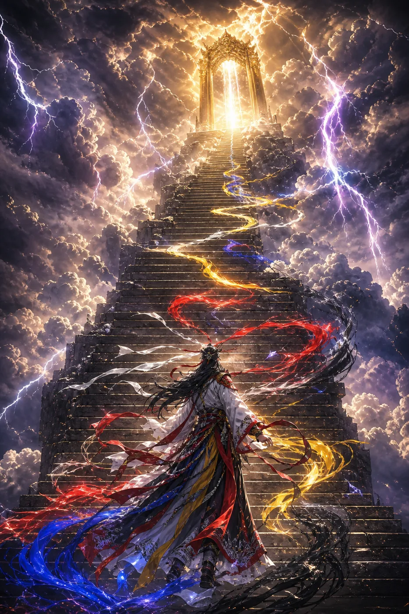

본풀이 · 다섯 굿
신들의 이야기를 읊는 심방이 되어 보세요!
1무슨 게임이에요?
여러분은 심방이에요. 심방은 노래와 이야기로 신을 부르는 사람이에요.
카드를 내면서 다섯 번의 굿을 해내면 승리!
졌다고 슬퍼하지 마세요. 모은 카드는 전부 남으니까요.
2세 가지 힘
- 명 — 나의 생명이에요. 0이 되면 굿이 끝나요. 다섯 굿 내내 이어지니 아껴야 해요.
- 장단 — 카드를 낼 힘이에요. 내 차례마다 3개 생겨요. 남겨도 이월은 안 돼요!
- 넋 — 나를 지키는 방패예요. 공격을 대신 맞아줘요. 단, 내 차례가 시작되면 사라져요.
3내 차례엔 이렇게

① 카드를 뽑아요. 처음엔 7장, 다음부터는 5장까지.
② 장단이 허락하는 만큼 카드를 내요. 카드마다 값이 적혀 있어요.
③ 다 냈으면 턴 종료를 눌러요.
남은 손패는 버림더미로 가요. 걱정 마세요 — 덱이 다 떨어지면 다시 섞여서 돌아와요.
4적을 잘 보세요

적은 착하게도 다음에 뭘 할지 미리 보여줘요.
주먹이면 공격! 예상 피해 숫자까지 알려주니, 그만큼 넋을 쌓아 막으면 돼요.
부정이라는 나쁜 기운은 방패를 뚫고 들어와요. 이건 빨리 풀어주는 게 좋아요.
5카드는 네 가지

- 신(神) — 신령의 힘이에요. 공격도 하고 방패도 만들어요. 쓰면 버림더미로 가요.
- 무구 — 심방의 도구예요. 한 번 꺼내면 굿이 끝날 때까지 계속 도와줘요.
- 굿 — 아주 강한 의식이에요. 대신 한 턴에 한 장만 쓸 수 있어요.
- 좌정 — 신을 집에 모시는 거예요. 한 분만 모실 수 있고, 매 턴 도와주세요. 새로 모시면 먼저 분은 떠나요.
6연계 — 본풀이를 완성해요!

같은 이야기(본풀이)에 나오는 신들은 서로 도와요.
같은 이야기 카드를 이어서 낼수록 점점 세져요.
첫 장은 그냥, 둘째 장은 더 세게, 셋째 장은 훨씬 세게!
세 번 읊으면 본풀이 완성! 이야기가 다 완성되면 그게 최고예요. 그 뒤로는 더 세지지 않아요.
7이기면 선물을 골라요
굿을 이기면 둘 중 하나를 골라요.
- 새 신 모시기 — 고른 카드가 3장 들어와요. 대신 기본 카드 3장이 빠져요. 덱은 늘 50장!
- 정화하기 — 명을 회복하고, 기본 카드 1장을 정리해요. 덱이 깔끔해져요.
고른 카드는 보관함에도 영원히 저장돼요. 다음 굿을 준비할 때 덱에 넣을 수 있어요.
8승천 — 더 높은 도전

다섯 굿을 다 이기면 승천에 도전할 수 있어요.
계단을 오를수록 적이 무시무시해져요. 꼭대기 문은 최고의 심방만 열 수 있대요!
9숫자 한눈에 보기
| 시작 생명(명) | 70 |
|---|---|
| 내 차례의 장단 | 3 |
| 첫 손패 | 7장 (다음 턴부터 5장) |
| 덱 | 딱 50장 |
| 같은 카드 | 4장까지 (신칼·넋가림·사설 풀기는 무제한) |
| 이기는 법 | 다섯 굿 연속 승리 |